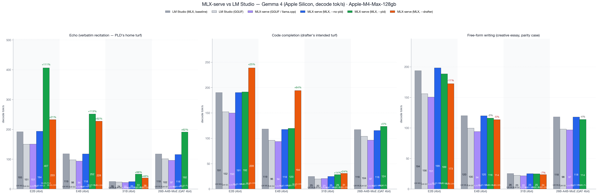
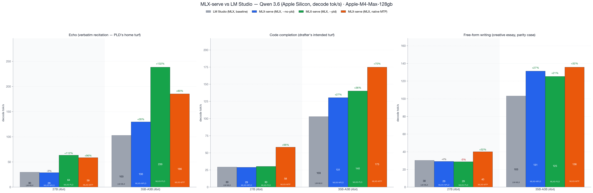

Identical weights, identical Mac, identical prompts — mlx-serve decodes +48% faster (geomean) on MLX models with speculative decoding. Native menu-bar app, MIT license, no Electron, no Python.
Best mlx-serve vs best LM Studio, identical 4-bit MLX weights, ctx 4096, temp 0. Reproduce with tests/bench.sh --family gemma --lmstudio — the harness ships in the repo.


| Capability | mlx-serve | LM Studio |
|---|---|---|
| MLX + GGUF models | ✓ | ✓ |
| Decode speed, identical weights | +48% geomean | baseline |
| OpenAI-compatible API | ✓ | ✓ |
| Anthropic Messages API (Claude Code) | ✓ | partial |
| OpenAI Responses API + WebSockets | ✓ | partial |
| Ollama API (drop-in for Ollama clients) | ✓ | ✗ |
| Speculative decoding (PLD + drafter + MTP) | ✓ | ✗ |
| KV-cache quantization | ✓ | ✗ |
| Continuous batching | ✓ | ✗ |
| Agent mode + MCP client | ✓ 10 tools | ✗ |
| Sandboxed agent shell (Linux VM) | ✓ | ✗ |
| DeepSeek V4 Flash (284B) | ✓ via ds4 | ✗ |
| Image / video / voice generation, local | ✓ | ✗ |
| App runtime | Native Swift | Electron |
| License | MIT | Proprietary |
Feature set as of v26.7.6. Benchmark details, CSVs, and the reproduction harness live in the repo.
MLX Core reads LM Studio's own ~/.lmstudio/settings.json and auto-discovers your existing model folder, so everything you've already downloaded shows up in the picker immediately — MLX and GGUF alike. Your OpenAI-compatible clients keep working too: same wire protocol, just a different port.
Yes, where it counts — +48% geomean across 18 workloads on identical 4-bit MLX weights (Gemma 4 E2B/E4B/31B/26B-A4B-MoE, Qwen 3.6 27B/35B-A3B-MoE, vs LM Studio 0.4.15), driven by speculative decoding: PLD up to 2.1× on echo, drafter +65% and native MTP +98% on code. The benchmark harness ships in the repo so you can reproduce it on your own machine.
No. MLX Core auto-discovers LM Studio's model folder via ~/.lmstudio/settings.json — everything on disk appears in the picker. A custom-folder picker covers models stored anywhere else.
Deeper Anthropic Messages (Claude Code works natively) and OpenAI Responses coverage than LM Studio’s newer compatibility endpoints — including a WebSocket transport and response compaction — a drop-in Ollama API, agent mode with MCP, an isolated Linux VM for agent shell commands, speculative decoding, KV-cache quantization, continuous batching, DeepSeek V4 Flash, and fully local image, video, and voice generation.
Yes — MIT license, server and app both. LM Studio is proprietary freeware; mlx-serve you can read, fork, and ship.
Download MLX Core — it finds your LM Studio models on first launch, so the switch costs you nothing but the download.